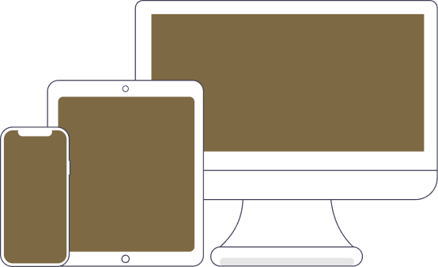

Do Salgado ao Doce e além
Culinária japonesa, francesa, talvez comida italiana ou vegana, não importa, no Zinhe tem de tudo.

O Zinhe é uma plataforma de streaming de videos relacionados a culinária
Acesse AgoraCulinária japonesa, francesa, talvez comida italiana ou vegana, não importa, no Zinhe tem de tudo.
Estes e muitos outros estão disponíveis em nosso catalogo, especialmente para você:
Alex Atala
Bella Gil
Eric Jacquin
Paola Carrosella

Mohamed Hindi
Raiza Costa
O Zinhe já traz a lista de ingredientes relacionados a cada receita, assim você já pode olhar o que precisa antes de dar o play no video.
Smartphones, Tablets, Notebooks. A plataforma adapta a visualização para o tipo do dispositivo que você utiliza, bastando ter acesso a internet.
